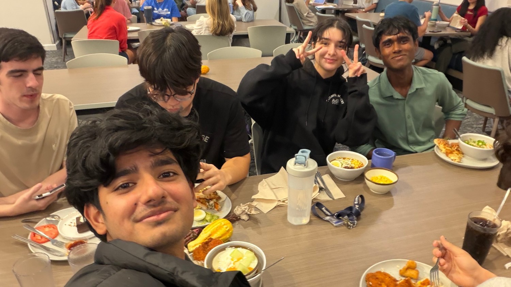
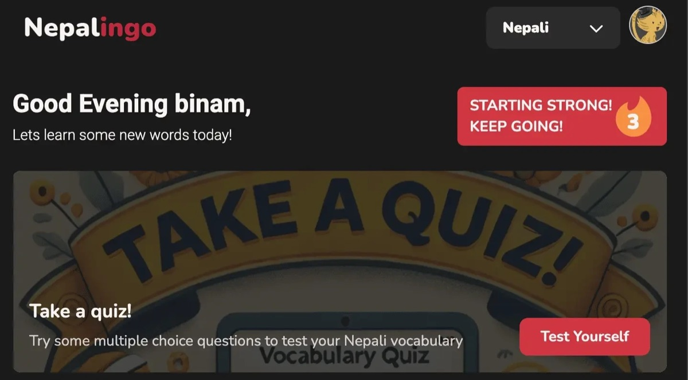
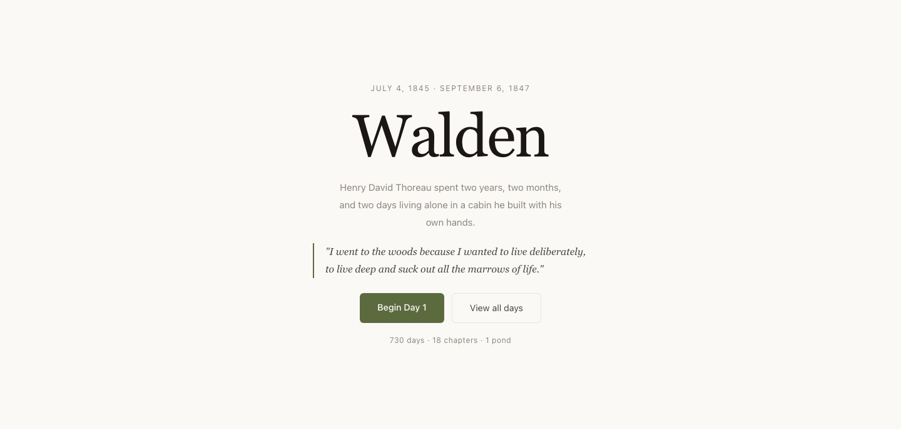
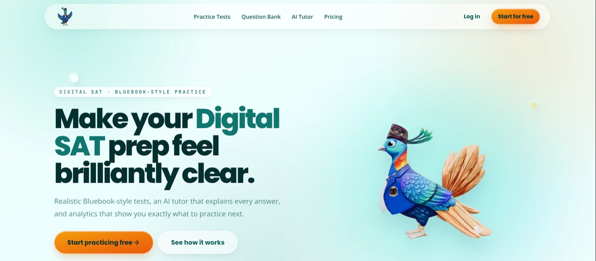
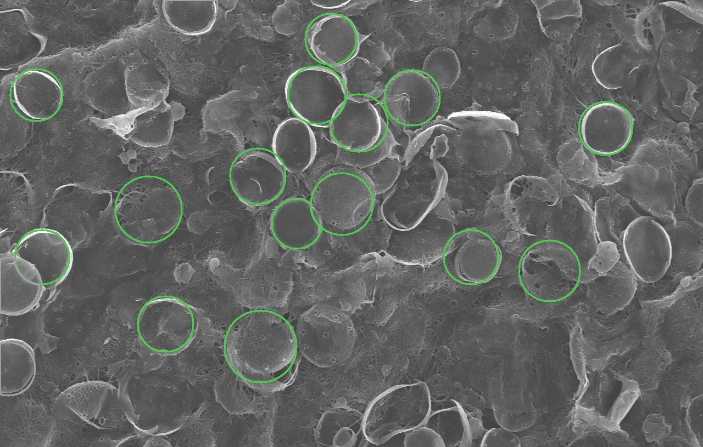

Aditya Bikram Thakur
Math and computer science at Washington and Lee. This is my story so far.

Pokhara, Nepal
I grew up in Pokhara, a lake city in central Nepal with the Annapurna range along its northern edge. The mountain everyone notices is Machhapuchhre, the “fish tail,” named for its split summit. You’ll find its outline drawn in a few places on this page.
Budhanilkantha School
I finished school at Budhanilkantha School in Kathmandu, where I took A Levels in Physics, Chemistry, Computer Science and Mathematics. I earned an A* in all four, scored 1600 on the SAT, and graduated as valedictorian.
Teaching a phone to read stone
My first real software project was Lipi AI, built with the Student Research Council Nepal. The goal was an app that could read a Tibetan inscription from a phone photo and translate it into English. I worked on the backend.
The hard part was the script itself. Tibetan letters stack on top of one another, and ordinary OCR (the software that turns pictures of text into text) expects to split a page into clean lines. I wrote code to separate the stacked letters, adapted Tesseract OCR to Tibetan, and tuned the image cleanup for faded, low-contrast photos. There were six of us students and two mentors, and at the end we presented the working system to linguists.
Nepalingo

The next summer I joined Incubate Nepal as a frontend developer on Nepalingo, an open-source web app for learning Nepal’s indigenous languages. I built the flashcards, the daily quiz and the activity cards, with audio playback. We worked in weekly sprints, with our code reviewed by engineers from Vista and Cirkul, and by the end I had merged 11 pull requests, the fourth most of the ten contributors.
Learning on my own
In 2025 I worked through three courses on my own: Stanford’s four-course Algorithms specialization, the Machine Learning specialization from DeepLearning.AI and Stanford, and Harvard’s CS50 Introduction to AI with Python, which is twelve projects long.
Two projects of my own


The summer before college I built two projects of my own. The first was walden.life, which turns Thoreau’s Walden into something you read one day at a time: 100 sourced daily entries, drawn from 12 of the book’s 18 chapters, laid out on a timeline. Sending only the five fields the timeline needs, instead of all ten, cut its first download by 53%.
The second was SATitude, a platform for practicing the digital SAT, with a React front end, a TypeScript API, user accounts and a PostgreSQL database.
Lexington, Virginia
In August 2026 I moved about 12,000 kilometers to Lexington, Virginia, to start at Washington and Lee University on a full-ride scholarship. I’m double majoring in mathematics and computer science.
DiatoMeter
A month into college I started working with William & Mary’s Nano & Biomaterials Lab on DiatoMeter. Diatoms are single-celled algae that build tiny shells out of glass, and the lab studies those shells under a scanning electron microscope. Measuring them meant clicking around each shell, one at a time.
DiatoMeter does the whole image at once. It reads the microscope’s scale bar, outlines the shells, throws out debris, and measures and grades each one. On one image it found and measured 136 shells in about 15 seconds. Its scale reading lands within 0.12% of the microscope’s own calibration, and a small model that guesses which sample an image came from was right 77% of the time on imaging sessions it had never seen.

Still building
That brings the story to now: my first year at Washington and Lee, with DiatoMeter still growing. The rest hasn’t been written yet. If you’d like to talk, here’s how to reach me.